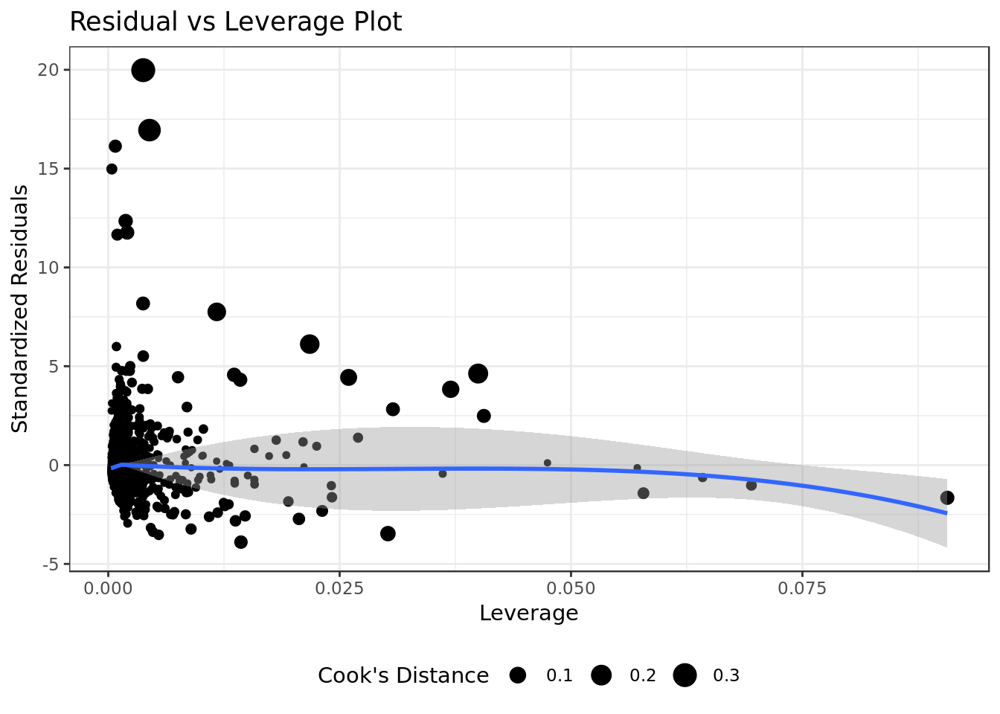

Analysis on Brazilian elections
Introduction
Data Analysis with multivariate Linear Regression on data about polls for the 2006 and 2010 elections in Brazil for the “Câmara Federal de Deputados”. Data was taken from the TSE portal and encompasses approximately 7300 candidates.
Data Overview
Loading Data
eleicoes_data <- readr::read_csv(
here::here('evidences/eleicoes_2006_e_2010.csv'),
progress = FALSE,
local=readr::locale("br"),
col_types = cols(
ano = col_integer(),
sequencial_candidato = col_character(),
quantidade_doacoes = col_integer(),
quantidade_doadores = col_integer(),
total_receita = col_double(),
media_receita = col_double(),
recursos_de_outros_candidatos.comites = col_double(),
recursos_de_pessoas_fisicas = col_double(),
recursos_de_pessoas_juridicas = col_double(),
recursos_proprios = col_double(),
`recursos_de_partido_politico` = col_double(),
quantidade_despesas = col_integer(),
quantidade_fornecedores = col_integer(),
total_despesa = col_double(),
media_despesa = col_double(),
votos = col_integer(),
.default = col_character()))# Let's put everything in Upper case for uniformity
eleicoes_data %>%
mutate(nome = toupper(nome),
sexo = toupper(sexo),
grau = toupper(grau),
nome = toupper(nome),
cargo = toupper(cargo),
ocupacao = toupper(ocupacao),
partido = toupper(partido),
estado_civil = toupper(estado_civil),
sequencial_candidato = as.numeric(sequencial_candidato)) -> eleicoes_data
# Adding surrogate key to dataframe
eleicoes_data$id <- 1:nrow(eleicoes_data)
eleicoes_data %>%
glimpse()## Observations: 7,476
## Variables: 25
## $ ano <int> 2006, 2006, 2006, 2006, 20…
## $ sequencial_candidato <dbl> 10001, 10002, 10002, 10002…
## $ nome <chr> "JOSÉ LUIZ NOGUEIRA DE SOU…
## $ uf <chr> "AP", "RO", "AP", "MS", "R…
## $ partido <chr> "PT", "PT", "PT", "PRONA",…
## $ quantidade_doacoes <int> 6, 13, 17, 6, 48, 6, 14, 2…
## $ quantidade_doadores <int> 6, 13, 16, 6, 48, 6, 7, 2,…
## $ total_receita <dbl> 16600.00, 22826.00, 158120…
## $ media_receita <dbl> 2766.67, 1755.85, 9301.22,…
## $ recursos_de_outros_candidatos.comites <dbl> 0.00, 6625.00, 2250.00, 0.…
## $ recursos_de_pessoas_fisicas <dbl> 9000.00, 15000.00, 34150.0…
## $ recursos_de_pessoas_juridicas <dbl> 6300.00, 1000.00, 62220.80…
## $ recursos_proprios <dbl> 1300.00, 201.00, 59500.00,…
## $ recursos_de_partido_politico <dbl> 0, 0, 0, 0, 0, 0, 0, 0, 11…
## $ quantidade_despesas <int> 14, 24, 123, 8, 133, 9, 17…
## $ quantidade_fornecedores <int> 14, 23, 108, 8, 120, 9, 10…
## $ total_despesa <dbl> 16583.60, 20325.99, 146011…
## $ media_despesa <dbl> 1184.54, 846.92, 1187.09, …
## $ cargo <chr> "DEPUTADO FEDERAL", "DEPUT…
## $ sexo <chr> "MASCULINO", "FEMININO", "…
## $ grau <chr> "ENSINO MÉDIO COMPLETO", "…
## $ estado_civil <chr> "CASADO(A)", "SOLTEIRO(A)"…
## $ ocupacao <chr> "VEREADOR", "SERVIDOR PÚBL…
## $ votos <int> 8579, 2757, 17428, 1193, 2…
## $ id <int> 1, 2, 3, 4, 5, 6, 7, 8, 9,…The variables
The response variable is the variable that you are interested in reaching conclusions about.
A predictor variable is a variable used to predict another variable.
Our response variable will be "votos", we want to study how well the predictor variables can help predict its behavior and how they impact in the linear regression.Each item corresponds to a candidate, the attributes of each item are as follows:
- ano : Year at which the election took place.
- sequencial_candidato : Sequential ID to map the candidates
- nome : Name of the candidate
- uf : Federate state to which the candidate belongs.
- partido : Political party to which the candidate belongs.
- quantidade_doacoes : Number of donations received during political campaign.
- quantidade_doadores : Number of donators that contributed to the candidate’s political campaign.
- total_receita : Total revenue.
- media_receita : Mean revenue.
- recursos_de_outros_candidatos.comites : Revenue coming from other candidate’s committees.
- recursos_de_pessoas_fisicas : Revenue coming from individuals.
- recursos_de_pessoas_juridicas : Revenue coming from legal entities.
- recursos_proprios : Revenue coming from personal resources.
- recursos_de_partido_politico : Revenue coming from political party.
- quantidade_despesas : Number of expenses.
- quantidade_fornecedores : Number of suppliers.
- total_despesa : Total expenditure.
- media_despesa : Mea expenditure.
- cargo : Position.
- sexo : Sex.
- grau : Level of education.
- estado_civil : Marital status.
- ocupacao : Candidate’s occupation up to the election.
- votos : Number of votes received.
Data Exploration
eleicoes_data %>%
filter(ano == 2006) %>%
group_by(partido) %>%
summarize(n = sum(votos)) %>%
ggplot(aes(reorder(partido,n), n)) +
geom_bar(stat = "identity") +
theme(axis.text.x = element_text(angle = 90,
hjust = 1)) +
labs(x="Political Party",
title="2006 elections",
y="Number of votes") -> p1
eleicoes_data %>%
filter(ano == 2010) %>%
group_by(partido) %>%
summarize(n = sum(votos)) %>%
ggplot(aes(reorder(partido,n), n)) +
geom_bar(stat = "identity") +
theme(axis.text.x = element_text(angle = 90,
hjust = 1)) +
labs(x="Political Party",
title="2010 elections",
y="Number of votes") -> p2
grid.arrange(p1, p2, ncol=1)
- In 2010 the poltical party \(PMDB\) takes the first place from the poltical party \(PT\)
- The poltical party \(PSDB\) maintains its position at the third place.
eleicoes_data %>%
ggplot(aes(total_receita)) +
geom_histogram(bins = 30) +
labs(x="Total Revenue",
y="Absolute Frequency") +
facet_grid(. ~ ano) +
theme(axis.text.x = element_text(angle = 90, hjust = 1))- We can see a positive skew where small values are very frequent
- This indicates that for this predictor: \(mode < median < mean\)
eleicoes_data %>%
ggplot(aes(media_receita)) +
geom_histogram(bins = 30) +
labs(x="Mean Revenue",
y="Absolute Frequency") +
facet_grid(. ~ ano)- We can see a positive skew where small values are very frequent
- This indicates that for this predictor: \(mode < median < mean\)
eleicoes_data %>%
ggplot(aes(total_despesa)) +
geom_histogram(bins = 30) +
labs(x="Total Expenditure",
y="Absolute Frequency") +
facet_grid(. ~ ano)- We can see a positive skew where small values are very frequent
- This indicates that for this predictor: \(mode < median < mean\)
eleicoes_data %>%
ggplot(aes(media_despesa)) +
geom_histogram(bins = 30) +
labs(x="Mean Expenditure",
y="Absolute Frequency") +
facet_grid(. ~ ano)- We can see a positive skew where small values are very frequent
- This indicates that for this predictor: \(mode < median < mean\)
eleicoes_data %>%
ggplot(aes(recursos_proprios)) +
geom_histogram(bins = 30) +
labs(x="Own resources",
y="Absolute Frequency") +
facet_grid(. ~ ano)- We can see a positive skew where small values are very frequent
- This indicates that for this predictor: \(mode < median < mean\)
eleicoes_data %>%
mutate(ano = as.factor(ano)) %>%
group_by(estado_civil, ano) %>%
summarize(n = n()) %>%
ggplot(aes(reorder(estado_civil,n), n,
fill= ano)) +
geom_bar(stat = "identity",
position = position_dodge(width = 0.5)) +
labs(x="Marital status of candidate",
y="Absolute Frequency") +
guides(fill = guide_legend(title = "year")) +
coord_flip()2010 overall tops 2006 in the number of candidates of each and every marital status with one exception:
- We see a decrease of candidates whose marital status is SEPARADO(A) JUDICIALMENTE from 2006 to 2010.
eleicoes_data %>%
mutate(ano = as.factor(ano)) %>%
group_by(grau, ano) %>%
summarize(n = n()) %>%
ggplot(aes(reorder(grau,n), n,
fill= ano)) +
geom_bar(stat = "identity",
position = position_dodge(width = 0.5)) +
labs(x="Education level",
y="Absolute Frequency") +
guides(fill = guide_legend(title = "year")) +
coord_flip()
2010 overall tops 2006 in the number of candidates of each and every education level with one exception:
- The number of candidates with level of education ENSINO FUNDAMENTAL INCOMPLETO decreased.
eleicoes_data %>%
group_by(sexo, ano) %>%
summarize(n = n()) %>%
ggplot(aes(reorder(sexo,n), n)) +
geom_bar(stat = "identity") +
labs(x="Sex",
y="Absolute Frequency") +
facet_grid(. ~ano)- Male predominance is maintained across elections.
Evaluating skew on predictors
Let’s take a look at the quantitative predictors of interest.
- sequencial candidato has no meaning attached to it so we’ll skip it.
eleicoes_data %>%
select(id,
quantidade_despesas,
quantidade_fornecedores,
recursos_de_partido_politico,
recursos_de_pessoas_juridicas,
recursos_de_pessoas_fisicas,
recursos_de_outros_candidatos.comites) %>%
melt(id=c("id")) %>%
ggplot(aes(x = value)) +
geom_histogram(bins = 30) +
facet_wrap(. ~ variable,
ncol = 2,
scales = "free_x") +
labs(x="Predictor",y="Absolute Frequency")- We can see a positive skew across checked predictors even if different elections are no longer discriminated.
eleicoes_data %>%
select(id,
total_receita,
media_receita,
total_despesa,
media_despesa,
recursos_proprios,
quantidade_doacoes,
quantidade_doadores) %>%
melt(id=c("id")) %>%
ggplot(aes(x = value)) +
geom_histogram(bins = 30) +
facet_wrap(. ~ variable,
scales = "free_x") +
labs(x="Predictor",y="Absolute Frequency")- The overall positive skew extends to these variables as well even if different elections are no longer discriminated.
Dealing with positive skew
The standard method to deal with a positive skew is to apply a logarithmic transformation to the affected predictor. However, to apply the aforementioned transformation the predictor must not contain any 0.
eleicoes_data %>%
select(quantidade_doacoes,
quantidade_doadores,
total_receita,
media_receita,
recursos_de_outros_candidatos.comites,
recursos_de_pessoas_fisicas,
recursos_de_pessoas_juridicas,
recursos_proprios,
recursos_de_partido_politico,
quantidade_despesas,
quantidade_fornecedores,
total_despesa,
media_despesa) %>%
sapply(., function(x) 0 %in% x) %>%
as.data.frame(row.names = NULL) %>%
tibble::rownames_to_column() %>%
set_colnames(c("predictor","contains_zero")) %>%
arrange(contains_zero)## predictor contains_zero
## 1 quantidade_doacoes FALSE
## 2 quantidade_doadores FALSE
## 3 quantidade_despesas FALSE
## 4 quantidade_fornecedores FALSE
## 5 total_receita TRUE
## 6 media_receita TRUE
## 7 recursos_de_outros_candidatos.comites TRUE
## 8 recursos_de_pessoas_fisicas TRUE
## 9 recursos_de_pessoas_juridicas TRUE
## 10 recursos_proprios TRUE
## 11 recursos_de_partido_politico TRUE
## 12 total_despesa TRUE
## 13 media_despesa TRUE- There are four predictors on which we may apply the logarithmic transformation
- We’ll resort to square root transformation for the rest.
# apply logarithmic transformation
eleicoes_data %>%
mutate(log.quantidade_doacoes = log10(quantidade_doacoes),
log.quantidade_doadores = log10(quantidade_doadores),
log.quantidade_despesas = log10(quantidade_despesas),
log.quantidade_fornecedores = log10(quantidade_fornecedores),
sqrt.total_receita = sqrt(total_receita),
sqrt.media_receita = sqrt(media_receita),
sqrt.total_despesa = sqrt(total_despesa),
sqrt.media_despesa = sqrt(media_despesa),
sqrt.recursos_proprios = sqrt(recursos_proprios),
sqrt.recursos_de_pessoas_juridicas = sqrt(recursos_de_pessoas_juridicas),
sqrt.recursos_de_partido_politico = sqrt(recursos_de_partido_politico),
sqrt.recursos_de_outros_candidatos.comites = sqrt(recursos_de_outros_candidatos.comites),
sqrt.recursos_de_pessoas_fisicas = sqrt(recursos_de_pessoas_fisicas)) -> eleicoes_data
# put all quantitative predictors (of interest) in same scale
eleicoes_data %>%
mutate_at(.vars = vars(quantidade_doacoes,
quantidade_doadores,
total_receita,
media_receita,
sqrt.total_receita,
sqrt.media_receita,
sqrt.recursos_de_outros_candidatos.comites,
sqrt.recursos_de_pessoas_fisicas,
sqrt.recursos_de_pessoas_juridicas,
sqrt.recursos_proprios,
sqrt.recursos_de_partido_politico,
sqrt.total_despesa,
sqrt.media_despesa,
log.quantidade_doacoes,
log.quantidade_doadores,
log.quantidade_despesas,
log.quantidade_fornecedores,
sequencial_candidato,
recursos_de_outros_candidatos.comites,
recursos_de_pessoas_fisicas,
recursos_de_pessoas_juridicas,
recursos_proprios,
recursos_de_partido_politico,
quantidade_despesas,
quantidade_fornecedores,
total_despesa,
media_despesa),
.funs = funs(as.numeric(scale(.)))) -> scaled_data## Warning: funs() is soft deprecated as of dplyr 0.8.0
## please use list() instead
##
## # Before:
## funs(name = f(.)
##
## # After:
## list(name = ~f(.))
## This warning is displayed once per session.eleicoes_data %>%
select(id,
log.quantidade_doacoes,
log.quantidade_doadores,
log.quantidade_despesas,
log.quantidade_fornecedores) %>%
melt(id=c("id")) %>%
ggplot(aes(x = value)) +
geom_histogram(bins = 30) +
facet_wrap(. ~ variable,
scales = "free_x") +
labs(x="Predictor",y="Absolute Frequency")
- We have evidence that the positive skew has been atenuated by the logarithmic transformations.
eleicoes_data %>%
select(id,
sqrt.total_receita,
sqrt.media_receita,
sqrt.recursos_de_outros_candidatos.comites,
sqrt.recursos_de_pessoas_fisicas,
sqrt.recursos_de_pessoas_juridicas,
sqrt.recursos_proprios,
sqrt.recursos_de_partido_politico,
sqrt.total_despesa,
sqrt.media_despesa) %>%
melt(id=c("id")) %>%
ggplot(aes(x = value)) +
geom_histogram(bins = 30) +
facet_wrap(. ~ variable,
scales = "free_x") +
labs(x="Predictor",y="Absolute Frequency")- We have evidence that the positive skew has been atenuated by the square root transformation.
- On a side note, the square root transformation seems less eficient than the logarithmic transformation.
Discern promising predictors
We’ll use the correlogram to have an idea on how the predictors interact with each and with the target variable. How the predictors react with the target votos is of particular interest.
- Predictors whom have been transformed will be replaced by their enhanced versions.
eleicoes_data %>%
filter(ano == 2006) %>%
select(-partido,
-uf,-nome,-id,
-estado_civil,
-ocupacao,-ano,
-total_receita,
-media_receita,
-total_despesa,
-media_despesa,
-recursos_proprios,
-cargo,-grau,-sexo,
-quantidade_doacoes,
-quantidade_doadores,
-quantidade_despesas,
-quantidade_fornecedores,
-recursos_de_pessoas_fisicas,
-recursos_de_partido_politico,
-recursos_de_pessoas_juridicas,
-recursos_de_outros_candidatos.comites) %>%
na.omit() %>%
ggcorr(palette = "RdBu",
color = "grey50",
label = TRUE, hjust = 1,
label_size = 3, size = 4,
nbreaks = 5, layout.exp = 7) +
ggtitle("Correlation plot for 2006 elections")- sequencial_candidato doesn’t not look meaningful (as expected).
- total_receita, total_despesa and recursos_de_pessoas_juridicas seem very meaningful.
eleicoes_data %>%
filter(ano == 2010) %>%
select(-partido,
-uf,-nome,-id,
-estado_civil,
-ocupacao,-ano,
-total_receita,
-media_receita,
-total_despesa,
-media_despesa,
-recursos_proprios,
-cargo,-grau,-sexo,
-quantidade_doacoes,
-quantidade_doadores,
-quantidade_despesas,
-quantidade_fornecedores,
-recursos_de_pessoas_fisicas,
-recursos_de_partido_politico,
-recursos_de_pessoas_juridicas,
-recursos_de_outros_candidatos.comites) %>%
na.omit() %>%
ggcorr(palette = "RdBu",
color = "grey50",
label = TRUE, hjust = 1,
label_size = 3, size = 4,
nbreaks = 5, layout.exp = 7) +
ggtitle("Correlation plot for 2010 elections")- sequencial_candidato doesn’t look meaningful (as expected).
- sqrt.total_receita, sqrt.total_despesa and sqrt.recursos_de_pessoas_juridicas seem meaningful.
eleicoes_data %>%
select(-partido,
-uf,-nome,-id,
-estado_civil,
-ocupacao,-ano,
-total_receita,
-media_receita,
-total_despesa,
-media_despesa,
-recursos_proprios,
-cargo,-grau,-sexo,
-quantidade_doacoes,
-quantidade_doadores,
-quantidade_despesas,
-quantidade_fornecedores,
-recursos_de_pessoas_fisicas,
-recursos_de_partido_politico,
-recursos_de_pessoas_juridicas,
-recursos_de_outros_candidatos.comites) %>%
na.omit() %>%
ggcorr(palette = "RdBu",
color = "grey50",
label = TRUE, hjust = 1,
label_size = 3, size = 4,
nbreaks = 5, layout.exp = 7) +
ggtitle("Correlation plot for both elections")- sequencial_candidato does’nt look meaningful (as expected).
- sqrt.total_receita, sqrt.total_despesa and sqrt.recursos_de_pessoas_juridicas seem very meaningful.
Should we use all variables?
A multivariate linear regression model made with all variables wouldn’t be feasible
- cargo is categorical and renders a one level factor. For this reason we simply can’t use it in our regression.
- sequencial_candidato isn’t meaningful at all as the correlogram clearly showed us.
- We have nominal categorical variables such as uf that have dozens of levels. A variable like this one demands a one hot encoding which would increase exponentialy the number of variables fed to the model and most likely lead to an overfitting.
For the aforementioned reasons a multivariate linear regression model made with all variables isn’t plausible.
Model for 2006 elections vs Model for 2010 elections
Linear Model for 2006 elections
Split Data for Cross Validation
- Let’s use the \(50/25/25\) proportions for the train, validate and test datasets.
scaled_data %>%
filter(ano == 2006) -> scaled_data_2006
scaled_data_2006 %>%
sample_n(5)## # A tibble: 5 x 38
## ano sequencial_cand… nome uf partido quantidade_doac…
## <int> <dbl> <chr> <chr> <chr> <dbl>
## 1 2006 -0.930 JOÃO… SP PDT -0.211
## 2 2006 -0.930 NERY… RS PFL -0.203
## 3 2006 -0.930 SÉRG… SP PT -0.0409
## 4 2006 -0.930 PAUL… SP PV -0.152
## 5 2006 -0.930 LUIS… RJ PTB -0.228
## # … with 32 more variables: quantidade_doadores <dbl>,
## # total_receita <dbl>, media_receita <dbl>,
## # recursos_de_outros_candidatos.comites <dbl>,
## # recursos_de_pessoas_fisicas <dbl>,
## # recursos_de_pessoas_juridicas <dbl>, recursos_proprios <dbl>,
## # recursos_de_partido_politico <dbl>, quantidade_despesas <dbl>,
## # quantidade_fornecedores <dbl>, total_despesa <dbl>,
## # media_despesa <dbl>, cargo <chr>, sexo <chr>, grau <chr>,
## # estado_civil <chr>, ocupacao <chr>, votos <int>, id <int>,
## # log.quantidade_doacoes <dbl>, log.quantidade_doadores <dbl>,
## # log.quantidade_despesas <dbl>, log.quantidade_fornecedores <dbl>,
## # sqrt.total_receita <dbl>, sqrt.media_receita <dbl>,
## # sqrt.total_despesa <dbl>, sqrt.media_despesa <dbl>,
## # sqrt.recursos_proprios <dbl>,
## # sqrt.recursos_de_pessoas_juridicas <dbl>,
## # sqrt.recursos_de_partido_politico <dbl>,
## # sqrt.recursos_de_outros_candidatos.comites <dbl>,
## # sqrt.recursos_de_pessoas_fisicas <dbl>set.seed(11) # We set the set for reason of reproducibility
scaled_data_2006 %>%
dplyr::sample_frac(.5) -> train_data_2006
encoding <- build_encoding(dataSet = train_data_2006,
cols = c("uf","sexo","grau",
"partido","estado_civil"),
verbose = F)
train_data_2006 <- one_hot_encoder(dataSet = train_data_2006,
encoding = encoding,
drop = TRUE,
verbose = F)
cat("#### Train Data ",
"\n##### Observations: ",nrow(train_data_2006),
"\n##### Variables: ",ncol(train_data_2006))Train Data
Observations: 1718
Variables: 102
set.seed(11) # We set the set for reason of reproducibility
dplyr::anti_join(scaled_data_2006,
train_data_2006,
by = 'id') -> intermediate_data
intermediate_data %>%
dplyr::sample_frac(.5) -> test_data_2006
test_data_2006 <- one_hot_encoder(dataSet = test_data_2006,
encoding = encoding,
drop = TRUE,
verbose = F)
cat("#### Test Data ",
"\n##### Observations: ",nrow(test_data_2006),
"\n##### Variables: ",ncol(test_data_2006))Test Data
Observations: 859
Variables: 102
set.seed(11) # We set the set for reason of reproducibility
dplyr::anti_join(intermediate_data,
test_data_2006,
by = 'id') -> validate_data_2006
validate_data_2006 <- one_hot_encoder(dataSet = validate_data_2006,
encoding = encoding,
drop = TRUE,
verbose = F)
rm(intermediate_data)
cat("#### Validate Data ",
"\n##### Observations: ",nrow(validate_data_2006),
"\n##### Variables: ",ncol(validate_data_2006))Validate Data
Observations: 859
Variables: 102
Train the model
mod_2006 <- lm(votos ~ log.quantidade_fornecedores * partido.PSDB + sqrt.media_despesa * partido.PMDB +
sqrt.total_receita * sqrt.total_despesa + uf.SP * estado.civil.CASADO.A. +
uf.RJ * sqrt.total_despesa + sqrt.total_receita * `grau.SUPERIOR COMPLETO`,
data = train_data_2006)
broom::glance(mod_2006)## # A tibble: 1 x 11
## r.squared adj.r.squared sigma statistic p.value df logLik AIC
## <dbl> <dbl> <dbl> <dbl> <dbl> <int> <dbl> <dbl>
## 1 0.521 0.517 31581. 116. 8.40e-258 17 -20228. 40492.
## # … with 3 more variables: BIC <dbl>, deviance <dbl>, df.residual <int>- As these quality metrics come from training they aren’t that meaningful:
- A decent \(R^2\) and \(adjusted \thinspace R^2\) around \(0.5\).
- The \(F \thinspace statistic\) (statistic) is way bigger than 1 (a good sign).
broom::tidy(mod_2006,
conf.int = TRUE,
conf.level = 0.95)## # A tibble: 17 x 7
## term estimate std.error statistic p.value conf.low conf.high
## <chr> <dbl> <dbl> <dbl> <dbl> <dbl> <dbl>
## 1 (Intercept) 33434. 2270. 14.7 2.58e-46 28982. 37885.
## 2 log.quantidade… -12327. 2032. -6.07 1.60e- 9 -16312. -8342.
## 3 partido.PSDB -3866. 3445. -1.12 2.62e- 1 -10623. 2892.
## 4 sqrt.media_des… -2453. 1689. -1.45 1.47e- 1 -5765. 860.
## 5 partido.PMDB -981. 2773. -0.354 7.23e- 1 -6420. 4457.
## 6 sqrt.total_rec… -14239. 10973. -1.30 1.95e- 1 -35762. 7283.
## 7 sqrt.total_des… 75440. 11734. 6.43 1.66e-10 52426. 98455.
## 8 uf.SP 4022. 3232. 1.24 2.13e- 1 -2316. 10361.
## 9 estado.civil.C… 1079. 1846. 0.584 5.59e- 1 -2542. 4699.
## 10 uf.RJ -237. 2661. -0.0892 9.29e- 1 -5456. 4981.
## 11 `grau.SUPERIOR… 765. 1815. 0.421 6.74e- 1 -2796. 4325.
## 12 log.quantidade… 3952. 3130. 1.26 2.07e- 1 -2186. 10091.
## 13 sqrt.media_des… -875. 2740. -0.319 7.50e- 1 -6249. 4500.
## 14 sqrt.total_rec… -7936. 1255. -6.32 3.29e-10 -10398. -5474.
## 15 uf.SP:estado.c… -5188. 3942. -1.32 1.88e- 1 -12920. 2543.
## 16 sqrt.total_des… -1166. 3843. -0.303 7.62e- 1 -8703. 6372.
## 17 sqrt.total_rec… 4494. 2714. 1.66 9.80e- 2 -830. 9818.Linear Model for 2010 elections
Split Data for Cross Validation
- Let’s use the \(50/25/25\) proportions for the train, validate and test datasets
scaled_data %>%
filter(ano == 2010) -> scaled_data_2010
scaled_data_2010 %>%
sample_n(5)## # A tibble: 5 x 38
## ano sequencial_cand… nome uf partido quantidade_doac…
## <int> <dbl> <chr> <chr> <chr> <dbl>
## 1 2010 0.382 FERN… MG PRTB -0.169
## 2 2010 -0.829 EDSO… AC PSDB -0.211
## 3 2010 0.988 MARC… RJ PDT 0.946
## 4 2010 -0.728 ELIA… AL PR -0.228
## 5 2010 -0.425 SEGI… BA PSC -0.100
## # … with 32 more variables: quantidade_doadores <dbl>,
## # total_receita <dbl>, media_receita <dbl>,
## # recursos_de_outros_candidatos.comites <dbl>,
## # recursos_de_pessoas_fisicas <dbl>,
## # recursos_de_pessoas_juridicas <dbl>, recursos_proprios <dbl>,
## # recursos_de_partido_politico <dbl>, quantidade_despesas <dbl>,
## # quantidade_fornecedores <dbl>, total_despesa <dbl>,
## # media_despesa <dbl>, cargo <chr>, sexo <chr>, grau <chr>,
## # estado_civil <chr>, ocupacao <chr>, votos <int>, id <int>,
## # log.quantidade_doacoes <dbl>, log.quantidade_doadores <dbl>,
## # log.quantidade_despesas <dbl>, log.quantidade_fornecedores <dbl>,
## # sqrt.total_receita <dbl>, sqrt.media_receita <dbl>,
## # sqrt.total_despesa <dbl>, sqrt.media_despesa <dbl>,
## # sqrt.recursos_proprios <dbl>,
## # sqrt.recursos_de_pessoas_juridicas <dbl>,
## # sqrt.recursos_de_partido_politico <dbl>,
## # sqrt.recursos_de_outros_candidatos.comites <dbl>,
## # sqrt.recursos_de_pessoas_fisicas <dbl>set.seed(11) # We set the set for reason of reproducibility
scaled_data_2010 %>%
dplyr::sample_frac(.5) -> train_data_2010
encoding <- build_encoding(dataSet = train_data_2010,
cols = c("uf","sexo","grau",
"partido","estado_civil"),
verbose = F)
train_data_2010 <- one_hot_encoder(dataSet = train_data_2010,
encoding = encoding,
drop = TRUE,
verbose = F)
cat("#### Train Data ",
"\n##### Observations: ",nrow(train_data_2010),
"\n##### Variables: ",ncol(train_data_2010))Train Data
Observations: 2020
Variables: 101
set.seed(11) # We set the set for reason of reproducibility
dplyr::anti_join(scaled_data_2010,
train_data_2010,
by = 'id') -> intermediate_data
intermediate_data %>%
dplyr::sample_frac(.5) -> test_data_2010
test_data_2010 <- one_hot_encoder(dataSet = test_data_2010,
encoding = encoding,
drop = TRUE,
verbose = F)
cat("#### Test Data ",
"\n##### Observations: ",nrow(test_data_2010),
"\n##### Variables: ",ncol(test_data_2010))Test Data
Observations: 1010
Variables: 101
set.seed(11) # We set the set for reason of reproducibility
dplyr::anti_join(intermediate_data,
test_data_2010,
by = 'id') -> validate_data_2010
validate_data_2010 <- one_hot_encoder(dataSet = validate_data_2010,
encoding = encoding,
drop = TRUE,
verbose = F)
rm(intermediate_data)
cat("#### Validate Data ",
"\n##### Observations: ",nrow(validate_data_2010),
"\n##### Variables: ",ncol(validate_data_2010))Validate Data
Observations: 1010
Variables: 101
Train the model
mod_2010 <- lm(votos ~ log.quantidade_fornecedores * partido.PSDB + sqrt.media_despesa * partido.PMDB +
sqrt.total_receita * sqrt.total_despesa + uf.SP * estado.civil.CASADO.A. +
uf.RJ * sqrt.total_despesa + sqrt.total_receita * `grau.SUPERIOR COMPLETO`,
data = train_data_2010)
broom::glance(mod_2010)## # A tibble: 1 x 11
## r.squared adj.r.squared sigma statistic p.value df logLik AIC
## <dbl> <dbl> <dbl> <dbl> <dbl> <int> <dbl> <dbl>
## 1 0.450 0.445 41280. 102. 1.15e-245 17 -24327. 48689.
## # … with 3 more variables: BIC <dbl>, deviance <dbl>, df.residual <int>- As the quality metric come from training they aren’t that meaningful
- The \(R^2\) and \(adjusted \thinspace R^2\) around \(0.45\) are borderline disappointing.
- The \(F \thinspace statistic\) (statistic) is way bigger than 1 (a good sign).
broom::tidy(mod_2010,
conf.int = TRUE,
conf.level = 0.95)## # A tibble: 17 x 7
## term estimate std.error statistic p.value conf.low conf.high
## <chr> <dbl> <dbl> <dbl> <dbl> <dbl> <dbl>
## 1 (Intercept) 27782. 2334. 11.9 1.33e-31 23203. 32360.
## 2 log.quantidade… -14528. 2494. -5.82 6.66e- 9 -19419. -9636.
## 3 partido.PSDB -4555. 4212. -1.08 2.80e- 1 -12816. 3706.
## 4 sqrt.media_des… -5917. 1497. -3.95 7.95e- 5 -8852. -2982.
## 5 partido.PMDB -1024. 3664. -0.279 7.80e- 1 -8210. 6162.
## 6 sqrt.total_rec… 29283. 9997. 2.93 3.44e- 3 9677. 48888.
## 7 sqrt.total_des… 35641. 10103. 3.53 4.29e- 4 15827. 55454.
## 8 uf.SP -3310. 3588. -0.923 3.56e- 1 -10346. 3726.
## 9 estado.civil.C… -811. 2186. -0.371 7.11e- 1 -5099. 3476.
## 10 uf.RJ -310. 2713. -0.114 9.09e- 1 -5630. 5009.
## 11 `grau.SUPERIOR… -2747. 1963. -1.40 1.62e- 1 -6596. 1102.
## 12 log.quantidade… -5525. 3343. -1.65 9.85e- 2 -12080. 1030.
## 13 sqrt.media_des… 715. 3173. 0.225 8.22e- 1 -5507. 6937.
## 14 sqrt.total_rec… -5713. 783. -7.30 4.15e-13 -7248. -4178.
## 15 uf.SP:estado.c… 11461. 4540. 2.52 1.17e- 2 2556. 20365.
## 16 sqrt.total_des… 1847. 2691. 0.686 4.93e- 1 -3430. 7124.
## 17 sqrt.total_rec… -6570. 1921. -3.42 6.39e- 4 -10337. -2802.Evaluating Models
We shall keep out the Intercept from our p.value and coefficient analysis as its analysis isn’t as meaningful as that of other predictors.
P Value
broom::tidy(mod_2006,
conf.int = TRUE,
conf.level = 0.95,
sep=":") %>%
arrange(desc(p.value)) %>%
slice(1:3) %>%
ggplot(aes(reorder(term,p.value), p.value)) +
geom_point(size = 2) +
labs(x = "Predictor variable",
y = "Estimated p-value",
title="Predictors of of biggest p.value (2006 elections)")- The predictors created out of the encoding of the nominal categorical variables uf and partido didn’t perform well.
- Unexpectedly sqrt.total_despesa didn’t perform so well in terms of \(p-value\), probably due to the interaction with the underperforming variable uf.
- Unexpectedly sqrt.media_despesa didn’t perform so well in terms of \(p-value\), probably due to the interaction with the underperforming variable partido.
broom::tidy(mod_2010,
conf.int = TRUE,
conf.level = 0.95,
sep=":") %>%
arrange(desc(p.value)) %>%
slice(1:3) %>%
ggplot(aes(reorder(term,p.value), p.value)) +
geom_point(size = 2) +
labs(x = "Predictor variable",
y = "Estimated p-value",
title="Predictors of biggest p.value (2010 elections)")- The predictors created out of the encoding of the nominal categorical variables partido and uf didn’t perform well.
- The predictor sqrt.media_despesa didn’t perform so well in terms of \(p-value\), probably due to the interaction with the underperforming variable partido.
On both models we can see that predictors related to partido perform poorly. Also we could see the sizable appearance of categorical variable among underperformer predictors.
P Value isn’t as effective in pointing out who are the most meaningful predictors as it’s in pointing which are the least meaningful.
broom::tidy(mod_2006,
conf.int = TRUE,
conf.level = 0.95,
sep=":") %>%
filter(term != "(Intercept)") %>%
arrange(p.value) %>%
slice(1:3) %>%
ggplot(aes(reorder(term,p.value), p.value)) +
geom_hline(yintercept = 0.05, colour = "darkred") +
geom_point(size = 2) +
labs(x = "Predictor variable",
y = "Estimated p-value",
title="Predictors of smallest p.value (2006 elections)")- We can see the presence of different combinations of the predictors sqrt.total_receita and sqrt.total_despesa as predictors with good pvalues. This corroborates what the correlogram suggested.
- We also have log.quantidade_fornecedores with positive results.
broom::tidy(mod_2010,
conf.int = TRUE,
conf.level = 0.95,
sep=":") %>%
filter(term != "(Intercept)") %>%
arrange(p.value) %>%
slice(1:3) %>%
ggplot(aes(reorder(term,p.value), p.value)) +
geom_hline(yintercept = 0.05, colour = "darkred") +
geom_point(size = 2) +
labs(x = "Predictor variable",
y = "Estimated p-value",
title="Predictors of smallest p.value (2010 elections)")- We can see the presence of different combinations of the predictors sqrt.total_receita and sqrt.total_despesa as predictors with good pvalues. This corroborates what the correlogram suggested.
- We also have log.quantidade_fornecedores and sqrt.media_despesa with positive results.
On both models different combinations of the predictors sqrt.total_receita and sqrt.total_despesa were clearly the best predictors (those that could explain the votes the most).
Coefficients
broom::tidy(mod_2006,
conf.int = TRUE,
conf.level = 0.95,
sep=":") %>%
filter(term != "(Intercept)") %>%
ggplot(aes(reorder(term, estimate),
estimate )) +
geom_bar(stat = "identity") +
coord_flip() +
labs(x="Coefficient",y="Predictor")- Results regarding coefficients corroborate what we saw in the predictors’ \(p.value\).
- uf and partido don’t seem meaningful (smallest coefficients).
- sqrt.total_receita, log.quantidade_fornecedores and specially sqrt.total_despesa seem particularly meaningful (biggest coefficients).
broom::tidy(mod_2010,
conf.int = TRUE,
conf.level = 0.95,
sep=":") %>%
filter(term != "(Intercept)") %>%
ggplot(aes(reorder(term, estimate),
estimate )) +
geom_bar(stat = "identity") +
coord_flip() +
labs(x="Coefficient",y="Predictor")- Results regarding coefficients seem to corroborate what we saw in the predictors’ \(p.value\).
- uf estado.civil and partido don’t seem meaningful (smallest coefficients).
- sqrt.total_receita, log.quantidade_fornecedores and specially sqrt.total_despesa seem particularly meaningful (biggest coefficients).
broom::tidy(mod_2006,
conf.int = TRUE,
conf.level = 0.95) %>%
filter(term != "(Intercept)") %>%
ggplot(aes(reorder(term, estimate),
estimate, ymin = conf.low,
ymax = conf.high)) +
geom_errorbar(size = 0.8, width= 0.4) +
geom_point(color = "red", size = 2) +
geom_hline(yintercept = 0, colour = "darkred") +
labs(x = "Predictor",
y = "Estimated coefficient (95% of confidence)") +
coord_flip()- The only predictors that seem statiscally significant at a level of confidence of \(95\%\) are sqrt.total_despesa, log.quantidade_fornecedores and the interaction between sqrt.total_despesa and sqrt.total_receita
broom::tidy(mod_2010,
conf.int = TRUE,
conf.level = 0.95) %>%
filter(term != "(Intercept)") %>%
ggplot(aes(reorder(term, estimate),
estimate, ymin = conf.low,
ymax = conf.high)) +
geom_errorbar(size = 0.8, width= 0.4) +
geom_point(color = "red", size = 2) +
geom_hline(yintercept = 0, colour = "darkred") +
labs(x = "Predictor",
y = "Estimated coefficient (95% of confidence)") +
coord_flip()- In the model for the 2010 elections at a level of confidence of \(95\%\) we have evidence of more statiscally significant predictors, among which we still have sqrt.total_despesa, log.quantidade_fornecedores and now also sqrt.total_receita (among others).
Residue Analysis
Resorting to thumb rules regarding Cook’s Distance we’ll use \(D_i > 1\) as a cutoff for highly influential points/outliers
Residual vs Fitted
mod_2006 %>%
ggplot(aes(.fitted, .resid)) +
geom_point() +
stat_smooth(method="loess") +
geom_hline(col="red",
yintercept=0,
linetype="dashed") +
labs(y="Residuals",
x="Fitted values",
title="Residual vs Fitted Plot (2006 elections)")- There’s indication, although not strong, of a pattern in the residual vs fitted, this is a bad sign for the analyzed model.
mod_2010 %>%
ggplot(aes(.fitted, .resid)) +
geom_point() +
stat_smooth(method="loess") +
geom_hline(col="red",
yintercept=0,
linetype="dashed") +
labs(y="Residuals",
x="Fitted values",
title="Residual vs Fitted Plot (2010 elections)")- Here we can see rather equally spread residuals around a horizontal line (could be better) without distinct patterns. A good sign for the model.
Normal Q-Q
mod_2006 %>%
ggplot(aes(sample=rstandard(.))) +
stat_qq(na.rm = TRUE,
shape=1,size=3) + # open circles
labs(title="Normal Q-Q (2006 elections)", # plot title
x="Theoretical Quantiles", # x-axis label
y="Standardized Residuals") + # y-axis label +
geom_abline(color = "red",
size = 0.8,
linetype="dashed") # dashed reference line- Our residuals somewhat deviate from a normal distribution. As we have a relatively mild deviation we have a negative yet mild symptom.
mod_2010 %>%
ggplot(aes(sample=rstandard(.))) +
stat_qq(na.rm = TRUE,
shape=1,size=3) + # open circles
labs(title="Normal Q-Q (2010 elections)", # plot title
x="Theoretical Quantiles", # x-axis label
y="Standardized Residuals") + # y-axis label +
geom_abline(color = "red",
size = 0.8,
linetype="dashed") # dashed reference line- Although not perfect we can see that the residuals for this model are closer to normally distributed.
Scale-Location
mod_2006 %>%
ggplot(aes(.fitted,
sqrt(abs(.stdresid)))) +
geom_point(na.rm=TRUE) +
stat_smooth(method="loess",
na.rm = TRUE) +
labs(title = "Scale-Location (2006 elections)",
x= "Fitted Value",
y = expression(sqrt("|Standardized residuals|")))- The residuals are not equally spread. Our model has violated the assumption of \(homoscedasticity\) (equal variance) which is a bad sign.
- The degree of the violation isn’t so extense, as from around the 50000th fitted value onward the residuals seem very equally spread.
mod_2010 %>%
ggplot(aes(.fitted,
sqrt(abs(.stdresid)))) +
geom_point(na.rm=TRUE) +
stat_smooth(method="loess",
na.rm = TRUE) +
labs(title = "Scale-Location (2010 elections)",
x= "Fitted Value",
y = expression(sqrt("|Standardized residuals|")))- Here we see a scenario similar to the one we just witnessed on the previous model.
Residual vs Leverage Plot
mod_2006 %>%
ggplot(aes(.hat, .stdresid)) +
geom_point(aes(size=.cooksd), na.rm=TRUE) +
stat_smooth(method="loess", na.rm=TRUE) +
xlab("Leverage")+ylab("Standardized Residuals") +
ggtitle("Residual vs Leverage Plot (2006 elections)") +
scale_size_continuous("Cook's Distance", range=c(1,5)) +
theme(legend.position="bottom")
- We can see no outliers that would drastically change the results of our model.
mod_2010 %>%
ggplot(aes(.hat, .stdresid)) +
geom_point(aes(size=.cooksd), na.rm=TRUE) +
stat_smooth(method="loess", na.rm=TRUE) +
xlab("Leverage")+ylab("Standardized Residuals") +
ggtitle("Residual vs Leverage Plot (2010 elections)") +
scale_size_continuous("Cook's Distance", range=c(1,5)) +
theme(legend.position="bottom")- Here we have evidence of a outlier that would drastically change the results of our model: \(D_i = 1.2\)
Cook’s dist vs Leverage
mod_2006 %>%
ggplot(aes(.hat, .cooksd)) +
geom_point(na.rm=TRUE) +
stat_smooth(method="loess", na.rm=TRUE) +
xlab("Leverage hii")+ylab("Cook's Distance") +
ggtitle("Cook's dist vs Leverage hii/(1-hii) (2006 elections)") +
geom_abline(slope=seq(0,3,0.5), color="gray", linetype="dashed")- We can see no outliers that would drastically change the results of our model.
mod_2010 %>%
ggplot(aes(.hat, .cooksd)) +
geom_point(na.rm=TRUE) +
stat_smooth(method="loess", na.rm=TRUE) +
xlab("Leverage hii")+ylab("Cook's Distance") +
ggtitle("Cook's dist vs Leverage hii/(1-hii) (2010 elections)") +
geom_abline(slope=seq(0,3,0.5), color="gray", linetype="dashed")- Here we have evidence of a outlier that would drastically change the results of our model: \(D_i = 1.2\) ## Cross Validation
Cross Validation
Validate
predictions <- mod_2006 %>% predict(validate_data_2006)
data.frame( R2 = caret::R2(predictions, validate_data_2006$votos),
RMSE = caret::RMSE(predictions, validate_data_2006$votos),
MAE = caret::MAE(predictions, validate_data_2006$votos),
ERR = caret::RMSE(predictions, validate_data_2006$votos)/
mean(validate_data_2006$votos))## R2 RMSE MAE ERR
## 1 0.5639769 30668.81 13639.2 1.321718Now let’s talk about the results taken from the validate data for 2006 elections (more meaningful).
We got a decent 0.56 R² and adjusted R² approximately (notice the decrease). This means that this model explain approximately 56% of the response variable variability.
- The average difference between the observed known outcome values and the values predicted by the model (RMSE) was of approximately 30669.
- Our model would miss the mark by approximately 30669 (RMSE), that is if candidate had one million votes we would predict 30669 more than we should (or less than we should).
- The average absolute difference between observed and predicted outcomes (MAE) was approximately 13639.2 .
The prediction error rate (ERR) was 1.321718.
predictions <- mod_2010 %>% predict(validate_data_2010)
data.frame( R2 = caret::R2(predictions, validate_data_2010$votos),
RMSE = caret::RMSE(predictions, validate_data_2010$votos),
MAE = caret::MAE(predictions, validate_data_2010$votos),
ERR = caret::RMSE(predictions, validate_data_2010$votos)/
mean(validate_data_2010$votos))## R2 RMSE MAE ERR
## 1 0.6208835 27599.68 13981.47 1.275393Now let’s talk about the results taken from the validate data for 2010 elections (more meaningful).
- We got a decent 0.62 R² and adjusted R² approximately (notice the decrease). This means that this model explain approximately 62% of the response variable variability. (Smaller than the previous model)
The average difference between the observed known outcome values and the values predicted by the model (RMSE) was of approximately 27600 + Our model would miss the mark by approximately 27600 (RMSE), that is if candidate had one million votes we would predict 27600 more than we should (or less than we should). The average absolute difference between observed and predicted outcomes (MAE) was approximately 13981. * The prediction error rate (ERR) was 1.275393.
We have signs here of a decent although not brilliant fit of the model for 2006 elections. There’s no clear evidence of overfitting as test, validate and train rendered consonant results.
Test
predictions <- mod_2006 %>% predict(test_data_2006)
data.frame( R2 = caret::R2(predictions, test_data_2006$votos),
RMSE = caret::RMSE(predictions, test_data_2006$votos),
MAE = caret::MAE(predictions, test_data_2006$votos),
ERR = caret::RMSE(predictions, test_data_2006$votos)/
mean(test_data_2006$votos))## R2 RMSE MAE ERR
## 1 0.5810708 28937.3 13644.98 1.236634Now let’s talk about the results taken from the test data for 2006 elections (most meaningful).
We got a decent 0.58 R² and adjusted R² approximately (notice the decrease). This means that this model explain approximately 58% of the response variable variability. (Smaller than the previous model)
- The average difference between the observed known outcome values and the values predicted by the model (RMSE) was of approximately 28937
- Our model would miss the mark by approximately 28937 (RMSE), that is if candidate had one million votes we would predict 28937 more than we should (or less than we should).
- The average absolute difference between observed and predicted outcomes (MAE) was approximately 13645.
The prediction error rate (ERR) was 1.236634.
predictions <- mod_2010 %>% predict(test_data_2010)
data.frame( R2 = caret::R2(predictions, test_data_2010$votos),
RMSE = caret::RMSE(predictions, test_data_2010$votos),
MAE = caret::MAE(predictions, test_data_2010$votos),
ERR = caret::RMSE(predictions, test_data_2010$votos)/
mean(test_data_2010$votos))## R2 RMSE MAE ERR
## 1 0.5920504 26772.92 12847.32 1.347477Now let’s talk about the results taken from the test data for 2006 elections (most meaningful).
We got a decent 0.59 R² and adjusted R² approximately (notice the decrease). This means that this model explain approximately 59% of the response variable variability. (Smaller than the previous model)
- The average difference between the observed known outcome values and the values predicted by the model (RMSE) was of approximately 26773
- Our model would miss the mark by approximately 26773 (RMSE), that is if candidate had one million votes we would predict 26773 more than we should (or less than we should).
- The average absolute difference between observed and predicted outcomes (MAE) was approximately 12847.
The prediction error rate (ERR) was 1.347477.
The model for the 2010 elections also showed of a decent although not brilliant fit. There’s no clear evidence of overfitting as test, validate and train rendered consonant results.
Removing redundant predictors
The quality assesment we performed (residue analysis, cross validation …) suggested that sqrt.total_receita, sqrt.total_despesa and log.quantidade_fornecedores were the most meaningful predictors (those that could explain the votes the most).
Evidence suggested that the rest of the predictors, such as partido, uf and estado.civil were redundant. For this reason we’ll try to create a model using only the most meaningful predictors (i.e a skimmed model).
2006 elections skimmed model
mod_2006 <- lm(votos ~ sqrt.total_receita * sqrt.total_despesa +
log.quantidade_fornecedores,
data = train_data_2006)
broom::glance(mod_2006)## # A tibble: 1 x 11
## r.squared adj.r.squared sigma statistic p.value df logLik AIC
## <dbl> <dbl> <dbl> <dbl> <dbl> <int> <dbl> <dbl>
## 1 0.518 0.517 31575. 460. 1.85e-269 5 -20234. 40480.
## # … with 3 more variables: BIC <dbl>, deviance <dbl>, df.residual <int>- As the quality metric come from training they aren’t that meaningful
- A decent \(R^2\) and \(adjusted \thinspace R^2\) very close to the original model.
- The \(F \thinspace statistic\) (statistic) is way bigger than 1 (a good sign) and bigger than that of the original model.
Residue Analysis
Resorting to thumb rules regarding Cook’s Distance we’ll use \(D_i > 1\) as a cutoff for highly influential points/outliers
mod_2006 %>%
ggplot(aes(.fitted, .resid)) +
geom_point() +
stat_smooth(method="loess") +
geom_hline(col="red",
yintercept=0,
linetype="dashed") +
labs(y="Residuals",
x="Fitted values",
title="Residual vs Fitted Plot (2006 elections)")- There’s indication, although not strong, of a pattern in the residual vs fitted, this is a bad sign for the analyzed model.
- Pattern stronger than the one from the original model.
mod_2006 %>%
ggplot(aes(sample=rstandard(.))) +
stat_qq(na.rm = TRUE,
shape=1,size=3) + # open circles
labs(title="Normal Q-Q (2006 elections)", # plot title
x="Theoretical Quantiles", # x-axis label
y="Standardized Residuals") + # y-axis label +
geom_abline(color = "red",
size = 0.8,
linetype="dashed") # dashed reference line- Our residuals somewhat deviate from a normal distribution. As we have a relatively mild deviation we have a negative yet mild sign for our model.
- Results similar to original model.
mod_2006 %>%
ggplot(aes(.fitted,
sqrt(abs(.stdresid)))) +
geom_point(na.rm=TRUE) +
stat_smooth(method="loess",
na.rm = TRUE) +
labs(title = "Scale-Location (2006 elections)",
x= "Fitted Value",
y = expression(sqrt("|Standardized residuals|")))- The residuals are not equally spread. Our model has violated the assumption of \(homoscedasticity\) (equal variance)
- Violation slightly stronger here.
mod_2006 %>%
ggplot(aes(.hat, .stdresid)) +
geom_point(aes(size=.cooksd), na.rm=TRUE) +
stat_smooth(method="loess", na.rm=TRUE) +
xlab("Leverage")+ylab("Standardized Residuals") +
ggtitle("Residual vs Leverage Plot (2006 elections)") +
scale_size_continuous("Cook's Distance", range=c(1,5)) +
theme(legend.position="bottom")- We can see no outliers that would drastically change the results of our model.
mod_2006 %>%
ggplot(aes(.hat, .cooksd)) +
geom_point(na.rm=TRUE) +
stat_smooth(method="loess", na.rm=TRUE) +
xlab("Leverage hii")+ylab("Cook's Distance") +
ggtitle("Cook's dist vs Leverage hii/(1-hii) (2006 elections)") +
geom_abline(slope=seq(0,3,0.5), color="gray", linetype="dashed")- Here we see indication of a somewhat more influential data point (still within acceptable range).
Cross Validation
Validate
predictions <- mod_2006 %>% predict(validate_data_2006)
data.frame( R2 = caret::R2(predictions, validate_data_2006$votos),
RMSE = caret::RMSE(predictions, validate_data_2006$votos),
MAE = caret::MAE(predictions, validate_data_2006$votos),
ERR = caret::RMSE(predictions, validate_data_2006$votos)/
mean(validate_data_2006$votos))## R2 RMSE MAE ERR
## 1 0.5632688 30697.33 13569.11 1.322946Now let’s talk about the results taken from the validate data (more meaningful).
- We got a decent 0.56 R² and adjusted R² approximately. This means that this model explain approximately 56% of the response variable variability.
- The average difference between the observed known outcome values and the values predicted by the model (RMSE) was of approximately 30697.
- Our model would miss the mark by approximately 30697 (RMSE), that is if candidate had one million votes we would predict 30697 more than we should (or less than we should).
- The average absolute difference between observed and predicted outcomes (MAE) was approximately 13569.
- The prediction error rate (ERR) was 1.322946.
Test
predictions <- mod_2006 %>% predict(test_data_2006)
data.frame( R2 = caret::R2(predictions, test_data_2006$votos),
RMSE = caret::RMSE(predictions, test_data_2006$votos),
MAE = caret::MAE(predictions, test_data_2006$votos),
ERR = caret::RMSE(predictions, test_data_2006$votos)/
mean(test_data_2006$votos))## R2 RMSE MAE ERR
## 1 0.5882667 28684.37 13522.92 1.225825Now let’s talk about the results taken from the test data (most meaningful).
- We got a decent 0.59 R² and adjusted R² approximately. This means that this model explain approximately 59% of the response variable variability.
- The average difference between the observed known outcome values and the values predicted by the model (RMSE) was of approximately 28684.
- Our model would miss the mark by approximately 28684 (RMSE), that is if candidate had one million votes we would predict 28684 more than we should (or less than we should).
- The average absolute difference between observed and predicted outcomes (MAE) was approximately 13522.92.
- The prediction error rate (ERR) was 1.225825.
Our skimmed model fared quite similarly to the original model especially in the cross validation.
2010 elections skimmed model
mod_2010 <- lm(votos ~ sqrt.total_receita * sqrt.total_despesa,
data = train_data_2010)
broom::glance(mod_2010)## # A tibble: 1 x 11
## r.squared adj.r.squared sigma statistic p.value df logLik AIC
## <dbl> <dbl> <dbl> <dbl> <dbl> <int> <dbl> <dbl>
## 1 0.433 0.432 41757. 514. 5.58e-248 4 -24356. 48723.
## # … with 3 more variables: BIC <dbl>, deviance <dbl>, df.residual <int>- As the quality metric come from training they aren’t that meaningful
- The \(R^2\) and \(adjusted \thinspace R^2\) around \(0.43\) are borderline disappointing and close to the original model.
- The \(F \thinspace statistic\) (statistic) is way bigger than 1 (a good sign) and bigger than the one from the original model.
Residue Analysis
Resorting to thumb rules regarding Cook’s Distance we’ll use \(D_i > 1\) as a cutoff for highly influential points/outliers
mod_2010 %>%
ggplot(aes(.fitted, .resid)) +
geom_point() +
stat_smooth(method="loess") +
geom_hline(col="red",
yintercept=0,
linetype="dashed") +
labs(y="Residuals",
x="Fitted values",
title="Residual vs Fitted Plot (2010 elections)")- Here we can see rather equally spread (could be better) residuals around a horizontal line without distinct patterns. A good sign for the model.
- Results slightly to those of the original model.
mod_2010 %>%
ggplot(aes(sample=rstandard(.))) +
stat_qq(na.rm = TRUE,
shape=1,size=3) + # open circles
labs(title="Normal Q-Q (2010 elections)", # plot title
x="Theoretical Quantiles", # x-axis label
y="Standardized Residuals") + # y-axis label +
geom_abline(color = "red",
size = 0.8,
linetype="dashed") # dashed reference line- Although not perfect we can see that the residuals for this model are closer to normally distributed.
- Results similar to those from the original model.
mod_2010 %>%
ggplot(aes(.fitted,
sqrt(abs(.stdresid)))) +
geom_point(na.rm=TRUE) +
stat_smooth(method="loess",
na.rm = TRUE) +
labs(title = "Scale-Location (2010 elections)",
x= "Fitted Value",
y = expression(sqrt("|Standardized residuals|")))- Here we see a scenario similar to the one we just witnessed, but in the case of this model the residuals are closer to equally spread.
- Results somewhat better than ones from original model.
mod_2010 %>%
ggplot(aes(.hat, .stdresid)) +
geom_point(aes(size=.cooksd), na.rm=TRUE) +
stat_smooth(method="loess", na.rm=TRUE) +
xlab("Leverage")+ylab("Standardized Residuals") +
ggtitle("Residual vs Leverage Plot (2010 elections)") +
scale_size_continuous("Cook's Distance", range=c(1,5)) +
theme(legend.position="bottom")- We can see no outliers that would drastically change the results of our model.
mod_2010 %>%
ggplot(aes(.hat, .cooksd)) +
geom_point(na.rm=TRUE) +
stat_smooth(method="loess", na.rm=TRUE) +
xlab("Leverage hii")+ylab("Cook's Distance") +
ggtitle("Cook's dist vs Leverage hii/(1-hii) (2010 elections)") +
geom_abline(slope=seq(0,3,0.5), color="gray", linetype="dashed")- We can see no outliers that would drastically change the results of our model.
Cross Validation
predictions <- mod_2010 %>% predict(validate_data_2010)
data.frame( R2 = caret::R2(predictions, validate_data_2010$votos),
RMSE = caret::RMSE(predictions, validate_data_2010$votos),
MAE = caret::MAE(predictions, validate_data_2010$votos),
ERR = caret::RMSE(predictions, validate_data_2010$votos)/
mean(validate_data_2010$votos))## R2 RMSE MAE ERR
## 1 0.6298557 27228.86 14152.26 1.258257Now let’s talk about the results taken from the validate data (more meaningful).
- We got a decent 0.63 R² and adjusted R² approximately. This means that this model explain approximately 63% of the response variable variability.
- The average difference between the observed known outcome values and the values predicted by the model (RMSE) was of approximately 27229.
- Our model would miss the mark by approximately 27229 (RMSE), that is if candidate had one million votes we would predict 27229 more than we should (or less than we should).
- The average absolute difference between observed and predicted outcomes (MAE) was approximately 14152.26.
- The prediction error rate (ERR) was 1.258257.
predictions <- mod_2010 %>% predict(test_data_2010)
data.frame( R2 = caret::R2(predictions, test_data_2010$votos),
RMSE = caret::RMSE(predictions, test_data_2010$votos),
MAE = caret::MAE(predictions, test_data_2010$votos),
ERR = caret::RMSE(predictions, test_data_2010$votos)/
mean(test_data_2010$votos))## R2 RMSE MAE ERR
## 1 0.6008068 26425.65 13160.91 1.329999Now let’s talk about the results taken from the test data (most meaningful).
We got a decent 0.60 R² and adjusted R² approximately (notice the decrease). This means that this model explain approximately 60% of the response variable variability.
- The average difference between the observed known outcome values and the values predicted by the model (RMSE) was of approximately 26426.
- Our model would miss the mark by approximately 26426 (RMSE), that is if candidate had one million votes we would predict 26426 more than we should (or less than we should).
- The average absolute difference between observed and predicted outcomes (MAE) was approximately 13160.91.
The prediction error rate (ERR) was 1.329999.
The skimmed model fared quite similarly to the original model in terms of cross validation. Furthermore, we got rid of the overly influential outlier.
Model for both elections
Split data for cross validation
- Let’s use the \(50/25/25\) proportions for the train,validate and test datasets
set.seed(11) # We set the set for reason of reproducibility
scaled_data %>%
dplyr::sample_frac(.5) -> train_data
encoding <- build_encoding(dataSet = train_data,
cols = c("uf","sexo","grau",
"partido","estado_civil"),
verbose = F)
train_data <- one_hot_encoder(dataSet = train_data,
encoding = encoding,
drop = TRUE,
verbose = F)
cat("#### Train Data ",
"\n##### Observations: ",nrow(train_data),
"\n##### Variables: ",ncol(train_data))Train Data
Observations: 3738
Variables: 105
set.seed(11) # We set the set for reason of reproducibility
dplyr::anti_join(scaled_data,
train_data,
by = 'id') -> intermediate_data
intermediate_data %>%
dplyr::sample_frac(.5) -> test_data
test_data <- one_hot_encoder(dataSet = test_data,
encoding = encoding,
drop = TRUE,
verbose = F)
cat("#### Test Data ",
"\n##### Observations: ",nrow(test_data),
"\n##### Variables: ",ncol(test_data))Test Data
Observations: 1869
Variables: 105
set.seed(11) # We set the set for reason of reproducibility
dplyr::anti_join(intermediate_data,
test_data,
by = 'id') -> validate_data
validate_data <- one_hot_encoder(dataSet = validate_data,
encoding = encoding,
drop = TRUE,
verbose = F)
rm(intermediate_data)
cat("#### Validate Data ",
"\n##### Observations: ",nrow(validate_data),
"\n##### Variables: ",ncol(validate_data))Validate Data
Observations: 1869
Variables: 105
mod <- lm(votos ~ sqrt.total_receita * sqrt.total_despesa +
log.quantidade_fornecedores,
data = train_data)
broom::glance(mod)## # A tibble: 1 x 11
## r.squared adj.r.squared sigma statistic p.value df logLik AIC
## <dbl> <dbl> <dbl> <dbl> <dbl> <int> <dbl> <dbl>
## 1 0.517 0.517 32532. 1001. 0 5 -44139. 88290.
## # … with 3 more variables: BIC <dbl>, deviance <dbl>, df.residual <int>- As the quality metric come from training they aren’t that meaningful
- The \(R^2\) and \(adjusted \thinspace R^2\) are decent.
- The \(F \thinspace statistic\) (statistic) is way bigger than 1 (a good sign).
Residue Analysis
Resorting to thumb rules regarding Cook’s Distance we’ll use \(D_i > 1\) as a cutoff for highly influential points/outliers
mod %>%
ggplot(aes(.fitted, .resid)) +
geom_point() +
stat_smooth(method="loess") +
geom_hline(col="red",
yintercept=0,
linetype="dashed") +
labs(y="Residuals",
x="Fitted values",
title="Residual vs Fitted Plot")- There’s mild indication of a pattern in the residual, this is a bad sign for the analyzed model.
mod %>%
ggplot(aes(sample=rstandard(.))) +
stat_qq(na.rm = TRUE,
shape=1,size=3) + # open circles
labs(title="Normal Q-Q", # plot title
x="Theoretical Quantiles", # x-axis label
y="Standardized Residuals") + # y-axis label +
geom_abline(color = "red",
size = 0.8,
linetype="dashed") # dashed reference line- Our residuals deviate considerably from a normal distribution.
mod %>%
ggplot(aes(.fitted,
sqrt(abs(.stdresid)))) +
geom_point(na.rm=TRUE) +
stat_smooth(method="loess",
na.rm = TRUE) +
labs(title = "Scale-Location",
x= "Fitted Value",
y = expression(sqrt("|Standardized residuals|")))- The residuals are not equally spread. Our model has violated the assumption of \(homoscedasticity\) (equal variance).
mod %>%
ggplot(aes(.hat, .stdresid)) +
geom_point(aes(size=.cooksd), na.rm=TRUE) +
stat_smooth(method="loess", na.rm=TRUE) +
xlab("Leverage")+ylab("Standardized Residuals") +
ggtitle("Residual vs Leverage Plot") +
scale_size_continuous("Cook's Distance", range=c(1,5)) +
theme(legend.position="bottom")
- We can see no outliers that would drastically change the results of our model.
mod %>%
ggplot(aes(.hat, .cooksd)) +
geom_point(na.rm=TRUE) +
stat_smooth(method="loess", na.rm=TRUE) +
xlab("Leverage hii")+ylab("Cook's Distance") +
ggtitle("Cook's dist vs Leverage hii/(1-hii)") +
geom_abline(slope=seq(0,3,0.5), color="gray", linetype="dashed")- We can see no outliers that would drastically change the results of our model.
Cross Validation
predictions <- mod %>% predict(validate_data)
data.frame( R2 = caret::R2(predictions, validate_data$votos),
RMSE = caret::RMSE(predictions, validate_data$votos),
MAE = caret::MAE(predictions, validate_data$votos),
ERR = caret::RMSE(predictions, validate_data$votos)/
mean(validate_data$votos))## R2 RMSE MAE ERR
## 1 0.6350622 25160.61 13125.83 1.139725Now let’s talk about the results taken from the validate data (more meaningful).
- We got a decent 0.64 R² and adjusted R² approximately. This means that this model explain approximately 64% of the response variable variability.
- The average difference between the observed known outcome values and the values predicted by the model (RMSE) was of approximately 25161.
- Our model would miss the mark by approximately 25161 (RMSE), that is if candidate had one million votes we would predict 25161 more than we should (or less than we should).
- The average absolute difference between observed and predicted outcomes (MAE) was approximately 13125.83.
- The prediction error rate (ERR) was 1.139725.
predictions <- mod %>% predict(test_data)
data.frame( R2 = caret::R2(predictions, test_data$votos),
RMSE = caret::RMSE(predictions, test_data$votos),
MAE = caret::MAE(predictions, test_data$votos),
ERR = caret::RMSE(predictions, test_data$votos)/
mean(test_data$votos))## R2 RMSE MAE ERR
## 1 0.4187352 41802.93 14063.7 1.855572Now let’s talk about the results taken from the test data (most meaningful).
- We got a borderline dissapointing 0.42 R² and adjusted R² approximately. This means that this model explain approximately 42% of the response variable variability.
- The average difference between the observed known outcome values and the values predicted by the model (RMSE) was of approximately 41801.
- Our model would miss the mark by approximately 41801 (RMSE), that is if candidate had one million votes we would predict 41801 more than we should (or less than we should).
- The average absolute difference between observed and predicted outcomes (MAE) was approximately 14063.7.
- The prediction error rate (ERR) was 1.855572.
In the model for both elections we could see signs of the model stuggling to fit the data. At the stage of cross validation as expected, and the model for both elections fared worse than the rest, especially in terms of test.